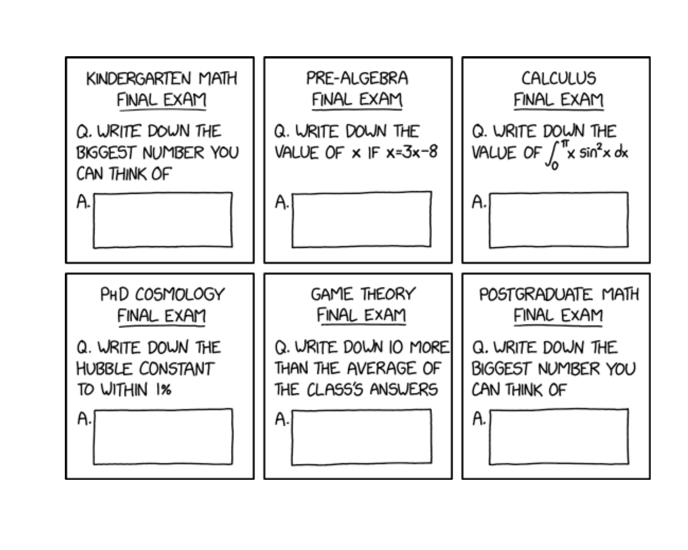
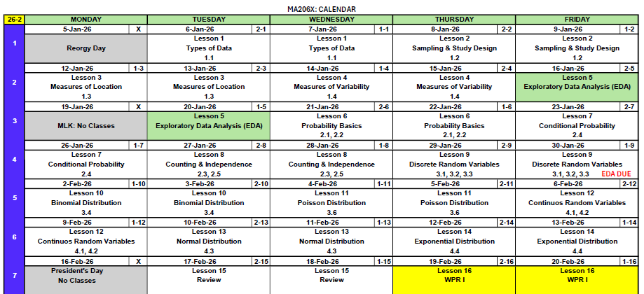
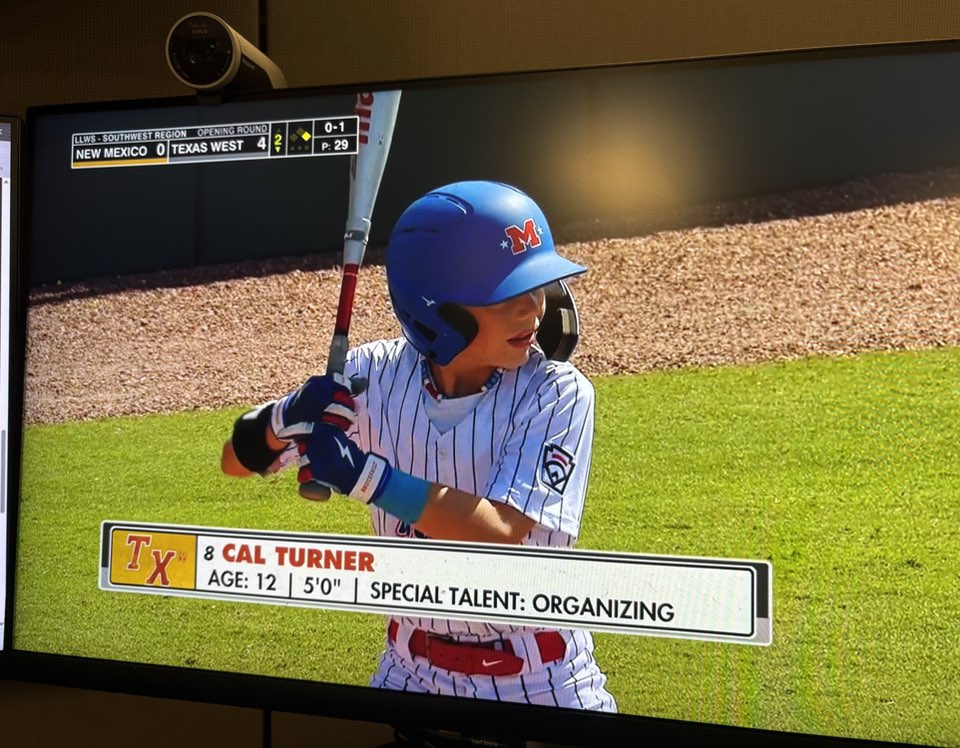
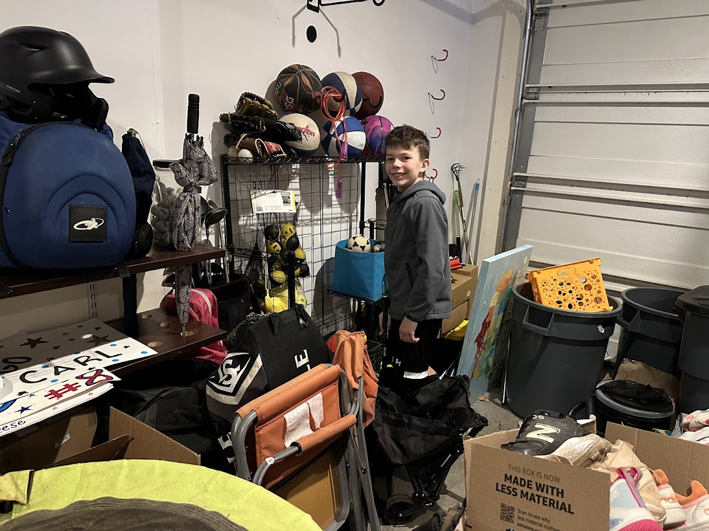

Lesson 15: Review (Lessons 6-14)
The same question on every exam from kindergarten through a PhD — and somehow it only gets harder. Don’t worry, WPR I falls somewhere between Pre-Algebra and Calculus on this scale.

WPR I Information
ImportantWPR I — Lesson 16
- Covers: Concepts from Lessons 6–14
- Time: 55 minutes
- Authorized: Course Statistics Reference Card (SRC) and the issued calculator
- No technology — no R, no internet, no electronic devices
- Round all numbers to three significant digits
Study Materials (also available on Canvas)
Break!
Reese
Cal


DMath Basketball!!
Math vs AWPAD
NotePreviously 8-4
9-4
NotePreviously 9-4
10-5
Class Problem
The continuous random variable \(X\) has PDF:
\[f_X(x) = \begin{cases} k(1-x) & \text{when } 0 \leq x \leq 1 \\ 0 & \text{otherwise} \end{cases}\]
Find the value of \(k\) that makes this a valid PDF.
Derive and fully define the CDF \(F_X(x)\) as a piecewise function.
Find \(P(0.25 \leq X \leq 0.75)\).
The median \(m\) of a random variable is defined as \(P(X \leq m) = 0.5\). Find the median of \(X\).
Compute \(E[X]\).
Compute \(Var(X)\).
TipAnswers
\(\int_0^1 k(1-x)\,dx = k\left[x - \frac{x^2}{2}\right]_0^1 = k\left(1 - \frac{1}{2}\right) = \frac{k}{2} = 1 \implies k = 2\)
For \(0 \leq x \leq 1\):
\(F_X(x) = \int_0^x 2(1-t)\,dt = 2\left[t - \frac{t^2}{2}\right]_0^x = 2x - x^2\)
\[F_X(x) = \begin{cases} 0 & x < 0 \\ 2x - x^2 & 0 \leq x \leq 1 \\ 1 & x > 1 \end{cases}\]
- \(P(0.25 \leq X \leq 0.75) = F(0.75) - F(0.25) = \left(2(0.75) - 0.75^2\right) - \left(2(0.25) - 0.25^2\right)\)
\(= (1.5 - 0.5625) - (0.5 - 0.0625) = 0.9375 - 0.4375 = 0.500\)
- Solve \(F(m) = 0.5\):
\(2m - m^2 = 0.5\)
\(m^2 - 2m + 0.5 = 0\)
\(m = \frac{2 \pm \sqrt{4 - 2}}{2} = \frac{2 \pm \sqrt{2}}{2} = 1 \pm \frac{\sqrt{2}}{2}\)
Since \(0 \leq m \leq 1\): \(m = 1 - \frac{\sqrt{2}}{2} \approx 0.293\)
\(E[X] = \int_0^1 x \cdot 2(1-x)\,dx = 2\int_0^1 (x - x^2)\,dx = 2\left[\frac{x^2}{2} - \frac{x^3}{3}\right]_0^1 = 2\left(\frac{1}{2} - \frac{1}{3}\right) = 2 \cdot \frac{1}{6} = \frac{1}{3} \approx 0.333\)
\(E[X^2] = \int_0^1 x^2 \cdot 2(1-x)\,dx = 2\int_0^1 (x^2 - x^3)\,dx = 2\left[\frac{x^3}{3} - \frac{x^4}{4}\right]_0^1 = 2\left(\frac{1}{3} - \frac{1}{4}\right) = 2 \cdot \frac{1}{12} = \frac{1}{6}\)
\(Var(X) = E[X^2] - (E[X])^2 = \frac{1}{6} - \left(\frac{1}{3}\right)^2 = \frac{1}{6} - \frac{1}{9} = \frac{3}{18} - \frac{2}{18} = \frac{1}{18} \approx 0.0556\)
Note
What does it mean to fully specify a distribution?
To fully specify a distribution means to state the distribution family and the numerical value(s) of its parameter(s). For example:
- Binomial: \(X \sim Bin(n, p)\) — e.g., \(X \sim Bin(12, 0.75)\)
- Poisson: \(X \sim Pois(\lambda)\) — e.g., \(X \sim Pois(3)\)
- Normal: \(X \sim N(\mu, \sigma^2)\) — e.g., \(X \sim N(40, 5^2)\)
- Exponential: \(T \sim Exp(\lambda)\) — e.g., \(T \sim Exp(2)\)
Simply saying “binomial” or “normal” is not fully specified — you must include the parameter values.
NoteComplete Distribution Reference
| Binomial | Poisson | Normal | Exponential | |
|---|---|---|---|---|
| Type | Discrete | Discrete | Continuous | Continuous |
| Notation | \(X \sim \text{Bin}(n, p)\) | \(X \sim \text{Pois}(\lambda)\) | \(X \sim N(\mu, \sigma^2)\) | \(X \sim \text{Exp}(\lambda)\) |
| Parameters | \(n, p\) | \(\lambda\) | \(\mu, \sigma\) | \(\lambda\) |
| Models | # successes in \(n\) trials | # events in fixed interval | Symmetric measurements | Time between events |
| Mean | \(np\) | \(\lambda\) | \(\mu\) | \(1/\lambda\) |
| Variance | \(np(1-p)\) | \(\lambda\) | \(\sigma^2\) | \(1/\lambda^2\) |
| SD | \(\sqrt{np(1-p)}\) | \(\sqrt{\lambda}\) | \(\sigma\) | \(1/\lambda\) |
Block I Concept Outline — Lessons 6–14
Lesson 6: Probability Basics (Devore 2.1, 2.2)
- Sample spaces and events
- Kolmogorov Axioms (non-negativity, normalization, additivity)
- Complement rule: \(P(A^c) = 1 - P(A)\)
- Inclusion-Exclusion: \(P(A \cup B) = P(A) + P(B) - P(A \cap B)\)
Practice
A Forward Operating Base (FOB) tracks two types of alerts: perimeter alarms (P) and drone detections (D). In a given week, \(P(P) = 0.6\), \(P(D) = 0.45\), and \(P(P \cap D) = 0.25\).
What is the probability of no perimeter alarms this week?
What is the probability of at least one type of alert?
What is the probability of a perimeter alarm but NOT a drone detection?
TipAnswers
\(P(P^c) = 1 - P(P) = 1 - 0.6 = 0.4\)
\(P(P \cup D) = P(P) + P(D) - P(P \cap D) = 0.6 + 0.45 - 0.25 = 0.8\)
\(P(P \cap D^c) = P(P) - P(P \cap D) = 0.6 - 0.25 = 0.35\)
Lesson 7: Conditional Probability (Devore 2.4)
- Conditional probability: \(P(A|B) = P(A \cap B) / P(B)\)
- Multiplication rule
- Bayes’ Rule: \(P(A|B) = \frac{P(B|A)P(A)}{P(B)}\)
- Law of Total Probability: \(P(B) = \sum P(B|A_i)P(A_i)\)
Practice
At an airborne school, 55% of candidates are infantry (\(I\)) and 45% are non-infantry (\(I^c\)). 80% of infantry candidates complete the course, while 60% of non-infantry candidates complete it. Let \(C\) = the event a candidate completes the course.
What is the probability a randomly selected candidate completes the course?
A candidate did NOT complete the course. What is the probability they were infantry?
Are the events “infantry” and “completes the course” independent? Justify mathematically.
TipAnswers
- \(P(C) = P(C|I)P(I) + P(C|I^c)P(I^c)\) by Law of Total Probability
\(= 0.80 \cdot 0.55 + 0.60 \cdot 0.45 = 0.44 + 0.27 = 0.710\)
- \(P(C^c) = 1 - 0.710 = 0.290\)
\(P(I|C^c) = \frac{P(C^c|I)P(I)}{P(C^c)} = \frac{0.20 \cdot 0.55}{0.290} = \frac{0.11}{0.290} = 0.379\)
- If independent, we need \(P(C|I) = P(C)\). We have \(P(C|I) = 0.80\) and \(P(C) = 0.710\). Since \(0.80 \neq 0.710\), the events are not independent.
Lesson 8: Independence & Counting (Devore 2.3, 2.5)
- Counting: ordered vs. unordered selections
- Permutations and combinations
- With vs. without replacement
- Independent events: \(P(A \cap B) = P(A) \cdot P(B)\)
- Independence implies \(P(B|A) = P(B)\)
Practice
Part A (Counting): A patrol team of 4 must be selected from 10 available soldiers.
How many distinct patrol teams can be formed?
If 2 of the 10 soldiers are medics, how many teams include at least one medic?
Part B (Independence): A sensor network has two independent sensors, \(S_1\) and \(S_2\). \(P(S_1 \text{ detects}) = 0.8\) and \(P(S_2 \text{ detects}) = 0.65\).
What is \(P(S_1 \cap S_2)\)?
What is the probability the network fails to detect (neither sensor detects)?
If \(S_1\) does not detect, what is the probability that \(S_2\) also does not detect?
Given that at least one sensor detects, what is the probability \(S_1\) detects?
TipAnswers
\(\binom{10}{4} = \frac{10!}{4!\,6!} = 210\)
Complement approach: teams with no medics choose all 4 from the 8 non-medics: \(\binom{8}{4} = 70\).
Teams with at least one medic: \(210 - 70 = 140\).
Since \(S_1\) and \(S_2\) are independent: \(P(S_1 \cap S_2) = P(S_1) \cdot P(S_2) = 0.8 \cdot 0.65 = 0.520\)
Neither detects: \(P(S_1^c \cap S_2^c) = P(S_1^c) \cdot P(S_2^c) = (1 - 0.8)(1 - 0.65) = 0.2 \cdot 0.35 = 0.0700\)
Since \(S_1\) and \(S_2\) are independent, \(S_1^c\) and \(S_2^c\) are also independent, so:
\(P(S_2^c | S_1^c) = P(S_2^c) = 1 - 0.65 = 0.35\)
- Note that \(S_1 \cap (S_1 \cup S_2) = S_1\), so:
\(P(S_1 | S_1 \cup S_2) = \frac{P(S_1)}{P(S_1 \cup S_2)}\)
\(P(S_1 \cup S_2) = 1 - P(S_1^c \cap S_2^c) = 1 - 0.0700 = 0.930\)
\(P(S_1 | S_1 \cup S_2) = \frac{0.8}{0.930} = 0.860\)
Lesson 9: Discrete Random Variables (Devore 3.1, 3.2, 3.3)
- PMF: validating that \(\sum p(x) = 1\) (finding unknown constant \(k\))
- CDF for discrete RVs
- Expected Value: \(E(X) = \sum x \cdot p(x)\)
- \(E(X^2) = \sum x^2 \cdot p(x)\)
- Variance: \(Var(X) = E(X^2) - [E(X)]^2\)
Practice
A platoon sergeant records the number of vehicles needing repair each day. Let \(X\) have the following PMF:
| \(x\) | 0 | 1 | 2 | 3 | 4 |
|---|---|---|---|---|---|
| \(P(X=x)\) | 0.10 | 0.25 | \(k\) | 0.20 | 0.10 |
Find \(k\).
Find the CDF \(F(x)\) and use it to compute \(P(X \leq 2)\).
Compute \(E[X]\).
Compute \(Var(X)\).
TipAnswers
\(\sum P(X=x) = 1 \implies 0.10 + 0.25 + k + 0.20 + 0.10 = 1 \implies k = 0.35\)
The CDF is:
| \(x\) | \(F(x) = P(X \leq x)\) |
|---|---|
| \(x < 0\) | \(0\) |
| \(0 \leq x < 1\) | \(0.10\) |
| \(1 \leq x < 2\) | \(0.35\) |
| \(2 \leq x < 3\) | \(0.70\) |
| \(3 \leq x < 4\) | \(0.90\) |
| \(x \geq 4\) | \(1.00\) |
\(P(X \leq 2) = F(2) = 0.70\)
\(E[X] = 0(0.10) + 1(0.25) + 2(0.35) + 3(0.20) + 4(0.10) = 0 + 0.25 + 0.70 + 0.60 + 0.40 = 1.95\)
\(E[X^2] = 0^2(0.10) + 1^2(0.25) + 2^2(0.35) + 3^2(0.20) + 4^2(0.10) = 0 + 0.25 + 1.40 + 1.80 + 1.60 = 5.05\)
\(Var(X) = E[X^2] - (E[X])^2 = 5.05 - (1.95)^2 = 5.05 - 3.8025 = 1.25\)
Lesson 10: Binomial Distribution (Devore 3.4)
- Binomial conditions (fixed \(n\), two outcomes, independent, constant \(p\))
- Specify distribution: \(X \sim Bin(n, p)\)
- Binomial PMF: \(P(X=k) = \binom{n}{k} p^k (1-p)^{n-k}\)
- Binomial CDF
- Mean: \(\mu = np\), Variance: \(\sigma^2 = np(1-p)\)
Practice
This section does not need technology and may be left in exact form.
A rifle qualification range tests 12 soldiers, each with a 0.75 probability of qualifying expert.
Fully specify the appropriate random variable distribution with parameters.
What is the expected number of expert qualifications and the standard deviation?
What is the probability that exactly 10 out of 12 qualify expert?
TipAnswers
\(X \sim Bin(12, 0.75)\)
\(E[X] = np = 12 \cdot 0.75 = 9\)
\(\sigma^2 = np(1-p) = 12 \cdot 0.75 \cdot 0.25 = 2.25\)
\(\sigma = \sqrt{2.25} = 1.50\)
- \(P(X = 10) = \binom{12}{10}(0.75)^{10}(0.25)^{2} = 66 \cdot (0.75)^{10} \cdot (0.25)^2 = 66 \cdot 0.05631 \cdot 0.0625 = 0.232\)
Lesson 11: Poisson Distribution (Devore 3.6)
- Poisson as a model for counts/rare events
- Specify distribution: \(X \sim Pois(\lambda)\)
- Poisson PMF: \(P(X=k) = e^{-\lambda}\lambda^k / k!\)
- Complement trick: \(P(X \geq 1) = 1 - P(X=0)\)
- \(\lambda\) = mean = variance
- Poisson approximation to binomial (large \(n\), small \(p\))
Practice
This section does not need technology and may be left in exact form.
Radio interference events occur at an average rate of 6 per hour.
Specify the distribution for the number of events in a 30-minute window.
What is the probability of exactly 2 events in that 30-minute window?
What is the probability of at least one event in that 30-minute window?
If a battalion experiences 500 independent radio transmissions per hour, each with a 0.005 probability of interference, approximate the distribution of interference events using the Poisson distribution.
TipAnswers
Rate for 30 minutes: \(\lambda = 6 \cdot 0.5 = 3\). So \(X \sim Pois(3)\).
\(P(X = 2) = \frac{e^{-3} \cdot 3^2}{2!} = \frac{9e^{-3}}{2} = 4.5e^{-3} \approx 0.224\)
\(P(X \geq 1) = 1 - P(X = 0) = 1 - \frac{e^{-3} \cdot 3^0}{0!} = 1 - e^{-3} \approx 0.950\)
\(n = 500\), \(p = 0.005\), so \(\lambda = np = 500 \cdot 0.005 = 2.5\). The number of interference events \(\approx Pois(2.5)\).
Lesson 12: Continuous Random Variables (Devore 4.1, 4.2)
- PDF — area under curve = probability
- Derive CDF from PDF via integration: \(F(x) = \int_{-\infty}^{x} f(t)\,dt\)
- Fully define CDF as a piecewise function (all three regions)
- Compute \(P(a \leq X \leq b) = F(b) - F(a)\)
- Find the median: solve \(F(m) = 0.5\)
- \(P(X = x) = 0\) for continuous RVs
- \(E(X)\) and \(Var(X)\) via integration
Practice
The continuous random variable \(X\) has PDF:
\[f_X(x) = \begin{cases} cx & \text{when } 0 \leq x \leq 4 \\ 0 & \text{otherwise} \end{cases}\]
Find the value of \(c\) that makes this a valid PDF.
Derive and fully define the CDF \(F_X(x)\) as a piecewise function.
Compute \(P(1 \leq X \leq 3)\).
Compute \(P(1 \leq X \leq 5)\).
Compute \(E[X]\).
TipAnswers
\(\int_0^4 cx\,dx = c\left[\frac{x^2}{2}\right]_0^4 = c \cdot 8 = 1 \implies c = \frac{1}{8}\)
For \(0 \leq x \leq 4\):
\(F_X(x) = \int_0^x \frac{1}{8}t\,dt = \frac{1}{8}\left[\frac{t^2}{2}\right]_0^x = \frac{x^2}{16}\)
\[F_X(x) = \begin{cases} 0 & x < 0 \\ \frac{x^2}{16} & 0 \leq x \leq 4 \\ 1 & x > 4 \end{cases}\]
\(P(1 \leq X \leq 3) = F(3) - F(1) = \frac{9}{16} - \frac{1}{16} = \frac{8}{16} = \frac{1}{2} = 0.500\)
Since \(5 > 4\), we use the piecewise CDF: \(F(5) = 1\).
\(P(1 \leq X \leq 5) = F(5) - F(1) = 1 - \frac{1}{16} = \frac{15}{16} = 0.938\)
- \(E[X] = \int_0^4 x \cdot \frac{1}{8}x\,dx = \frac{1}{8}\int_0^4 x^2\,dx = \frac{1}{8}\left[\frac{x^3}{3}\right]_0^4 = \frac{1}{8} \cdot \frac{64}{3} = \frac{64}{24} = \frac{8}{3} \approx 2.67\)
Lesson 13: Normal Distribution (Devore 4.3)
- Specify distribution: \(X \sim N(\mu, \sigma^2)\)
- \(P(X > a) = 1 - \Phi(z)\)
Practice
This section does not need technology and may be left in exact form.
The weight of ammunition crates is normally distributed with \(\mu = 40\) lbs and \(\sigma = 5\) lbs.
Fully specify the appropriate random variable distribution with parameters.
What is the probability a crate weighs between 32 and 48 lbs?
Find the value \(x\) such that \(P(X > x) = 0.10\). That is, what weight is exceeded by only 10% of crates?
TipAnswers
\(X \sim N(40, 5^2)\)
\(P(32 \leq X \leq 48) = P\left(\frac{32-40}{5} \leq Z \leq \frac{48-40}{5}\right) = P(-1.6 \leq Z \leq 1.6) = \Phi(1.6) - \Phi(-1.6) = 0.9452 - 0.0548 = 0.890\)
We need \(P(X > x) = 0.10\), so \(P(X \leq x) = 0.90\).
From the z-table: \(\Phi(z) = 0.90 \implies z = 1.28\).
\(x = \mu + z\sigma = 40 + 1.28(5) = 40 + 6.4 = 46.4\) lbs
Lesson 14: Exponential Distribution (Devore 4.4)
- Specify distribution: \(T \sim Exp(\lambda)\)
- Rate parameter \(\lambda\) vs. mean \(1/\lambda\)
- CDF: \(F(x) = 1 - e^{-\lambda x}\)
- \(P(T > t) = e^{-\lambda t}\)
- Memoryless property
Practice
This section does not need technology and may be left in exact form.
Equipment failures on a convoy occur at a rate of 2 per 100 miles. Let \(T\) be the distance (in hundreds of miles) until the next failure. Assume \(T\) follows an exponential distribution.
Fully specify the appropriate random variable distribution with parameters.
What is the probability the convoy travels more than 150 miles without a failure?
Given the convoy has already traveled 100 miles without failure, what is the probability it travels at least 50 more miles without failure?
TipAnswers
\(T \sim Exp(\lambda = 2)\)
150 miles \(= 1.5\) hundred miles.
\(P(T > 1.5) = e^{-2(1.5)} = e^{-3} \approx 0.0498\)
- By the memoryless property of the exponential distribution:
\(P(T > 1.5 \mid T > 1) = P(T > 0.5) = e^{-2(0.5)} = e^{-1} \approx 0.368\)
The memoryless property states that \(P(T > s + t \mid T > s) = P(T > t)\), so the past 100 miles of survival gives no information about the future.
Before You Leave
Today
- Review all concepts from Lessons 6–14
- Make your handwritten note sheet
- Work through the Block I Review Worksheet
Any questions?
Next Lesson
- Covers Concepts from Lessons 6–14
- 55 minutes
- Bring your SRC and calculator
Upcoming Graded Events
- WPR I - Lesson 16
- WPR II - Lesson 27